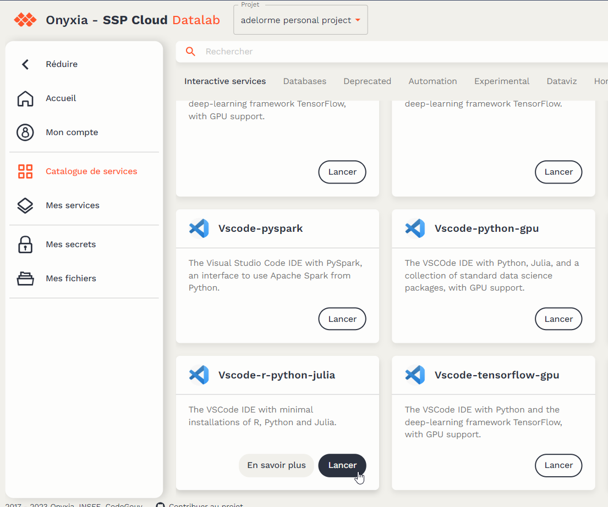
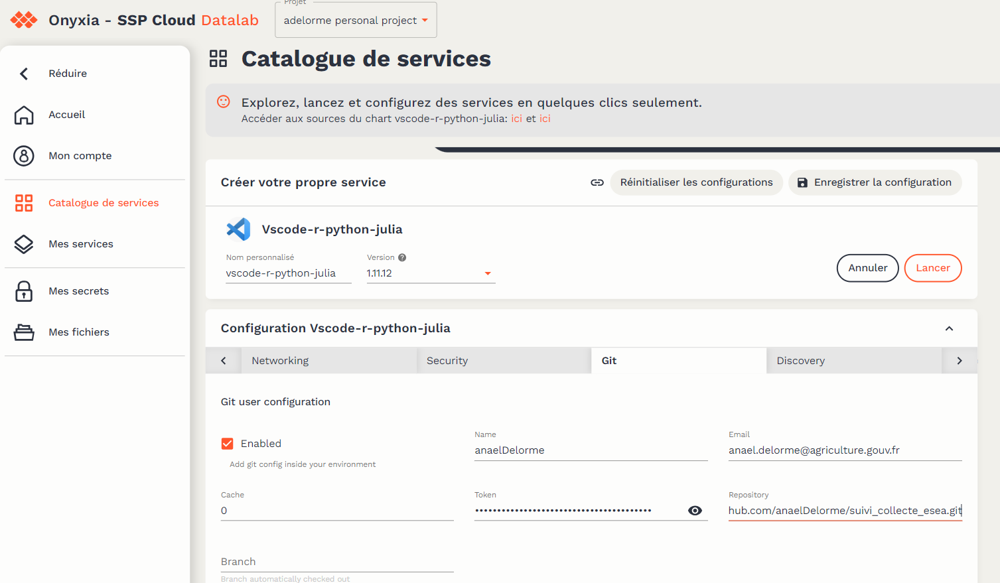

sudo apt-get update
sudo apt-get -y install libudunits2-dev
sudo apt-get -y install libproj-dev
sudo apt-get -y install libgdal-dev
sudo apt-get install pandoc9 Modifier une application existante
9.1 Charger les nouvelles données
Prérequis :
- avoir un compte sur le Datalab
- ëtre membre du projet projet-suivi-collecte-masa
C’est très simple :
- télécharger les données d’export de Capibara
- lancer le script de transformation en un fichier parquet (script qui permet d’enlever les données sensibles)
- aller sur le datalab
- se connecter
- aller sur Mes fichiers puis choisir le projet projet-suivi-collecte-masa : lien direct
- choisir le répertoire de l’enquête
- supprimer le(s) fichier(s) parquet
- glisser/déposer le(s) nouveau(x) fichier(s) parquet
9.2 Modifier le site de suivi
9.2.1 Modifier l’application Rshiny
Prérequis :
- avoir un compte sur le Datalab
- avoir un compte Github
- être collaborateur sur le repo Github du projet
Voici les étapes à suivre :
- aller github
- se connecter
- aller sur le repo du site de suivi : suivi-collecte-XXX
- copier le lien pour cloner le repo :

- aller sur le datalab
- se connecter
- créer un service VSCode-r-python-julia et indiquer le lien de clone du repo Github


- se connecter au service VSCode
- ouvrir un nouveau terminal et coller la commande :
- installer les packages utiles : taper r dans le terminal puis coller la commande suivante :
install.packages(c("tidyverse", "arrow", "shiny", "shinyWidgets", "bs4Dash", "shinymanager", "leaflet", "config", "DT", "echarts4r", "geojsonio", "glue", "golem", "htmlwidgets", "janitor", "sf", "testthat", "geojsonio", "dockerfiler", "attachment", "rsconnect", "spelling", "aws.s3", "waiter", "pandoc"))- changer l’étiquette du docker pour indiquer que ce sera un nouvelle version :
- ouvrir le fichier .github/workflows/ci.yaml
- ligne 38 changer la version
- ouvrir le fichier .github/workflows/ci.yaml
# Avant
${{ github.ref == 'refs/heads/main' && 'anaeldelorme/suivicollecteesea:latest' }}
# Après
${{ github.ref == 'refs/heads/main' && 'anaeldelorme/suivicollecteesea:latest,anaeldelorme/suivicollecteesea:v1.0.0' }}- indiquer la point de départ de l’application shiny : setwd(“suivi_collecte_XXXXX/suiviCollecte/”)
- modifier l’application shiny en modifiant les pages, les box…
- si vous ajouter de nouveaux packages, pensez à les mettre dans un #’ (import?), puis lancez attachment::att_amend_desc()
- tester l’application shiny en local en faisant un lançant le fichier dev/run_dev.R
- vérifier que le package de l’application peut être créé en lançant un devtools::check()
- s’il n’y a pas d’errrors dans le check, on peut alors committer et pusher dans Github
- vérifier dans github que l’action s’est bien déroulée
- vérifier que le Docker est bien accessible sur Dockerhub
NB : il est également possible de faire la même chose avec un Rstudio et même en dehors du datalab. L’utilisation du Datalab est une meilleure assurance que cela fonctionnera bien en déployant l’application (même plateforme technique).
9.2.2 Déployer la nouvelle version de l’application
Voici les étapes à suivre :
- aller github
- se connecter
- aller sur le repo de déploiement : deploiementcollecteXXXX
- copier le lien pour cloner le repo :
- aller sur le datalab
- se connecter
- créer un service VSCode-python, indiquer le lien de clone du repo Github et mettre les droits d’admin Kubernetes

- se connecter au service VSCode
- indiquer le tag de la version du Docker nouvellement créé dans le values.yaml à la 4ème ligne : tag: v1.0.0
- dans le terminal saisir : helm ls pour trouver le nom du chart actuellement déployé
- puis saisir : helm dependency build deploiemenetcollecteXXXX/
- et enfin saisir helm upgrade nom_chart_deploye deploiementcollecteXXXX/